Trustable Machine Learning Systems
Hello, and thank you for joining me today. My name is Jay Morgan, I'm a doctoral candidate at swansea university, and today I will be talking about one research method to create trustable machine learning systems.
1 - The Good, the bad, and the ugly
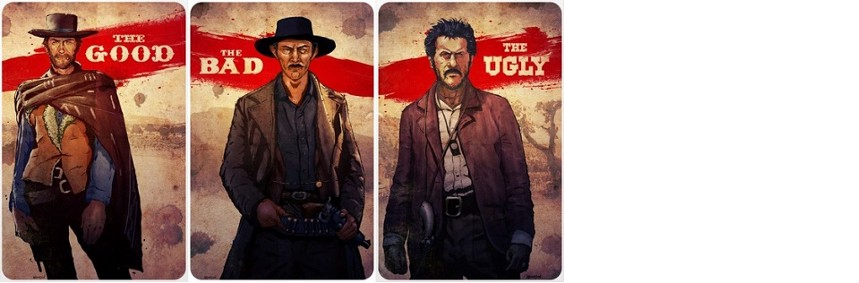
Or perhaps as I will put it today: the good, bad and ugly of Machine Learning
2 - Machine Learning at its "Good"

Let us begin with the good.
Machine Learning, and specifically Deep Learning, has achieved a level of speed of computation, a level of accuracy, and perceived intelligence, that its actually becoming very useful in our daily lives.
Over the last few years we're seeing a transformation the automotive industry, where a big few car manufacturers are rushing to bring us unprecidented levels of autonomous driving.
3 - Machine Learning at its "Ugly"

But theres a twist. And the twist is this: Machine Learning and the 'intelligent' models they create are not intelligent, and are subject to some various forms of attacks.
These attacks occur when specially crafted modifications are made to the input of the image. When these modifications are applied, the ML model will usually output a miss-classification with high confidence.
These types of attacks, adversarial attacks, have been shown to be very effective at reducing even the-state-of-art classifier models to almost 0 zero accuracy.
4 - Machine Learning at its "Bad"
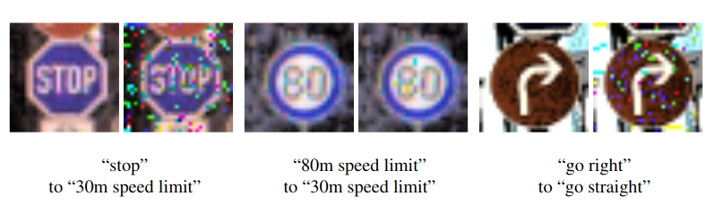
Figure 4: Huang, X., Kwiatkowska, M., Wang, S., & Wu, M. (2017, July). Safety verification of deep neural networks. In International conference on computer aided verification (pp. 3-29). Springer, Cham.
This presents a very serious problem for the use of ML in systems, like fully autonomous vehicles, where safety is paramount.
If such a modification is made to the input used by these ML models, even as a result of sensor defects, the result could cost human lives.
5 - A life with formal methods
I hope that our future aspirations that, not just of our project, but with Machine Learning in general, that formal methods can become the norm and uncover the uglyniness and so that we can transform it into all positives, all goods.
6 - What's in todays talk
- Explanation of Adversarial examples
- Defining the upper-bounds on where to search for these examples
- Creating Neural Networks and searching for adversarial examples using satisfiability theories. How this can be implemented to enable verification of Neural Network properties.
So in today's talk, I will give a description of what adversarial examples are, then a method for defining a search space in which to find them. Finally, I will introduce you to an open-source project to verify the existence of adversarial examples using satisfiability testing.
7 - Adversarial examples (mathematical formalisation)
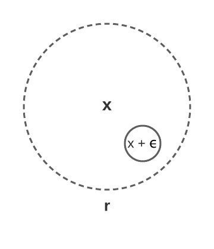
Given some classifier model \(\mathcal{F}: \mathbb{R}^{n \times m} \rightarrow Y, \ Y \in \{0, 1, ..., k-1\}\) and some input \(\textbf{x}\), and adversarial is created by the modification \(\epsilon\) within the range of \(r\) (i.e. \(\epsilon \leq r\)) that will result in a miss-classification: \(\mathcal{F}(\textbf{x}) \neq \mathcal{F}(\textbf{x} + \epsilon)\).
Here we have a more formal definition of what an adversarial is. If we have some classifier F. This classifier takes a vector, or in this case, a matrix input representation of a image \(x\). The output of this function is a single class label from \(k\) classes.
An adversarial example will then be some modification ε to this x where the result will be a different output from the classifier. Typically, this ε value will be bounded by some norm value. In this example we have an \(r\). I.e. this maximum amount of change to pixels will be bounded by this \(r\).
In other words, to create an adversarial, it is necessary to find some, suitably small, modification to the original input image, i.e. change of pixels, that will result in the model outputing an incorrect class.
Often, we find that the modifications are not noticable to the human observer, but yet, the model has a high degree of confidence in its incorrect prediction.
8 - How do we choose an \(r\)
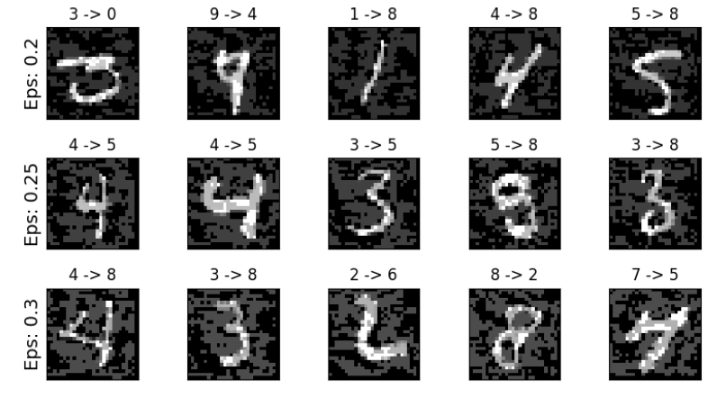
And by modifying the amount of perturbation one can apply to the input, we have more destructive modifications. But as you can see in these examples, each image still looks like their respective number, despite any perturbation is applied.
Two things to note:
- the less perturbed cases are included in the bigger r scenario
- the potential amount of adversarials probably increases with r
9 - Less clear with non-image data
Iris dataset - classifier aim: predict type of flower from 4 dimensional vector of Sepal Length, Sepal Width, Petal Length, and Petal Width. I.e. \(\mathcal{F}: \mathbb{R}^4 \rightarrow Y, \ Y \in \{0, 1, 2\}\).
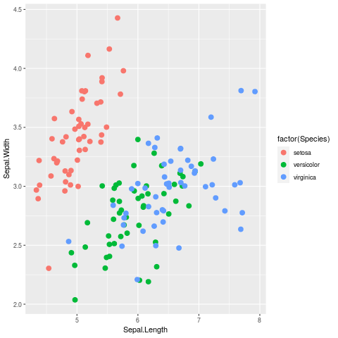
However, for non-image data, we must ask how much modification can we apply in order to search for adversarial examples?
In this toy example we have the Iris dataset. Called so because we have 3 different types of plant species indicated by the different coloured points. In this plot we have plotted the Sepal Width against the Sepal Length. A Neural Network will take these features such as Sepal Length or Width, and output a classification such as Setosa.
For these two out of four total features, the Setosa class may be almost linearly separated, the Versicolor and virginica classes are interdispersed using these two Sepal features.
10 - Applying a 'small' \(r\) can lead to overlaps of true class boundaries
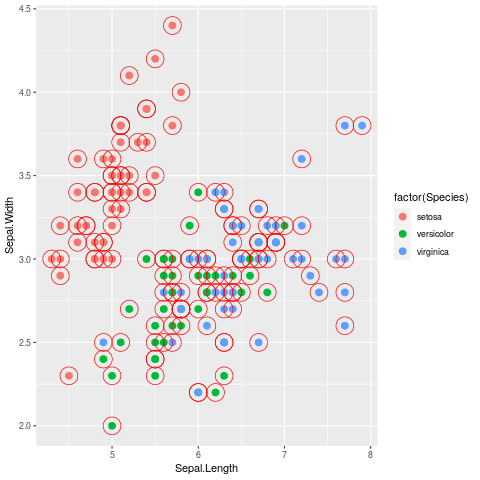
In this plot we have added a red outline to each point in the training data. This red outline represents the maximum amount of perturbation, our \(r\) bound we talked about before.
Even in this case where \(r\) is roughly 0.1, many modifications of the each point would push across potential class boundaries. This may be certainly true for the versicolor and viriginica classes. Yet for the Setosa class, we can be more sure that we have not passed any class boundaries.
So we may once again ask the question: which $r$-bound should we use when search for adversarial examples.
11 - Generate a individual \(r\) for each data point
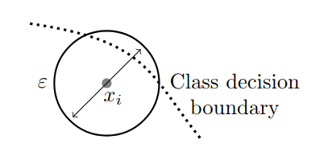
Figure 10: geometric complexity of class boundaries
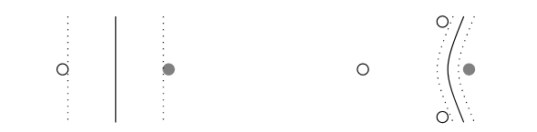
Figure 11: sparsity/density of sampling from data manifold that consistutes the training data.
Some of my research aims to answer this question, using the information presented in the available data. Given a set of data, a individual $r$-bound will be computed for each data point that will take into consideration the estimated class bounds, and how much information there is present in the data.
We consider two properties of the data in the process of generating these neighbourhoods. These are:
situations where differently labelled data points lay close together in the topological space, and therefore any perturbation of the data points could result in passing the class boundaries, while wrongly labelling the perturbation the same as the original. We have just seen this with the previous plots of the Iris data.
Our second property is shown in figure 2. It concerns the number of samples from different regions of the data manifold. In sparse regions (small numbers of samples), estimated class boundaries mayseem deceivingly simple, e.g. linear with a wide margin.
12 - Iterative expansion
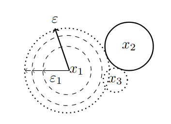
In our method we provide an algorithm to iteratively expand the maximum \(r\) bound.
Our method consists of iteratively expanding the maximum \(r\) bounds for each data point simulateanously. If the bound intersects with a bound of data point from a different class, then these two data points will stop expanding.
In this example we can see 3 data points, x1, x2, and x3. Where x1, and x3, are from one class, and x2 is from another. There are iterative steps for the expansion of x1 until it collides with the bound of x2. The bound of x3 is ignored as its from the same class.
13 - Modulating by density
Expansion is modulated by the estimated density of data samples. Using an inverse multiquadric radial basis function (RBF) to estimate the density at a given location.
\[ \varphi(x; \overline{x}) = \frac{1}{\sqrt{1 + (\varepsilon r)^2}},\; \text{where}\; r = \parallel \overline{x} - x \parallel \]
The estimated density for a single point is the sum of RBFS, centered on each point, at this location.
\[ \rho_c(x) = \sum_{x_j \in X^c} \varphi(x; x_j) \]
As we noted before, we may not have a lot of information in which to estimate the class boundaries. This lack of information occurs due to the lack of sampling of data. Therefore, we use this information of density of sampling to account for the lack of information of class boundaries.
This density modulates the expansion of the $r$-bound. If there is not lots of information about class boundaries, then the $r$-bound expansion will be a lot smaller.
14 - Final result: individual \(r\) value for each data point
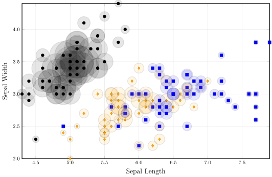
Morgan, J., Paiement, A., Pauly, A., & Seisenberger, M. (2021). Adaptive neighbourhoods for the discovery of adversarial examples. arXiv preprint arXiv:2101.09108.
After computing the density of each data point and expanding the neighbourhoods, then we will have an individual $r$-bound for each data point. This \(r\) provides the upper-bound with which to search for adversarial examples.
We can seen this plot, that the black points have grown much larger due to the large amounts of information about neighbours of the same class. While other points in the top right have not grown much at all. In this plot we can still see overlaps, but this is only because the neighbourhoods were computed at a higher number of dimensions while this plot only shows 2 dimensions. At these higher dimensions the neighbourhoods are not overlapping.
Here today, I have provided the iterative method to compute $r$-bounds, but we also provide another method using langrangian multipliers to directly compute these bounds. You can find the method in the paper "Adaptive neighbourhoods for the discovery of adversarial examples".
15 - Now we must find \(\textbf{x} + \epsilon\)
From the result of this iterative algorithm, we have an upper bound \(r\) value for each data point. However, we have not yet found an adversarial example. To find such an example, we must find some \(x + \epsilon\) where the model outputs a miss-classification.
To find these examples, we can use our open-source platform.
16 - Searching for the existence of adversarial examples
https://github.com/jaypmorgan/NeuralVerifier.jl - built on top of Z3 solver to provide an interface to verify Neural Network properties, such as: output bounds checking and adversarial robustness.
Our open-source platform is called NeuralVerifier. It allows use to verify certain properties of Neural Networks using Satisfiability Modulo Theories or SMT. We build ontop of an existing and highly used SMT solver called Z3, which allows us to provide more complex formulas to solve.
This next part of the talk will describe how we can create Neural Networks inside an SMT solver, and then how NeuralVerifier abstracts away the work to make searching for adversarial examples easier.
17 - Application of using NeuralVerifier
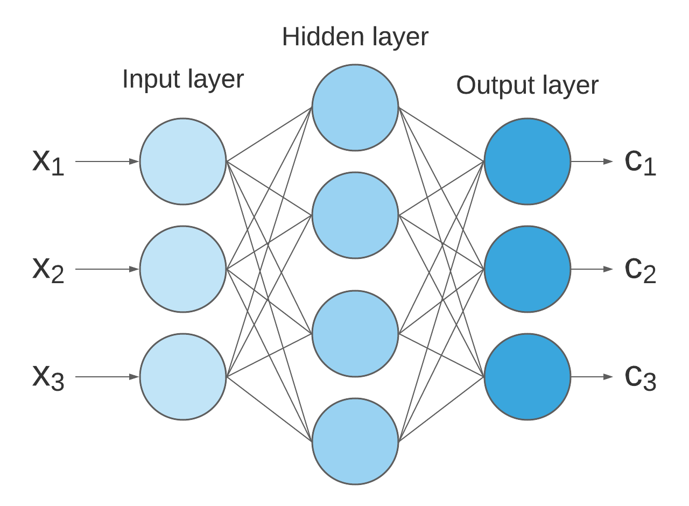
Take a very simple example of a 3-layer neural network.
To motivate the explanation, take this very simple example of a 3 layer neural network, with a single hidden layer in the middle.
This network takes in 3 inputs and produces three class outputs.
18 - Simple Arithmetic
\[ z = \sigma(Wx + b) \]
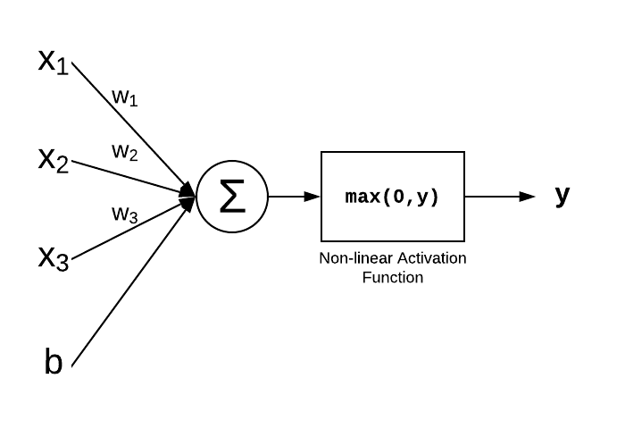
Where \(\sigma\) is some non-linear function to increase the model's complexity to allow it to model non-linear relationships. One of the most common non-linear functions when training neural networks is the Rectified Linear activation function (ReLU): \(\max(Wx+ b, 0)\).
At a microlevel, the neural network performs a very simple equation, a Weight matrix multiplied against the input vector, and the addition of the bias. A function is then applied to the the result of this expression. This activation function in a non-linearity which increases the learning capability of the network.
A very frequently used non-linear activation function is the ReLU activation function which simply computes the maximum between the input and 0.
19 - Encoding arithmetic
Z3 provides support for real linear arithmetic and provides operations for the basic multiplication and addition. Thus, we need only to apply these elementwise.
function dense(x, W, b)
out = fill!(Array(undef, size(W,1), size(x,2)), 0)
for i = 1:size(out,1), j = 1:size(W,2)
out[i] += W[i,j] * x[j]
end
out = out .+ b
return out
end
As NeuralVerifier is built ontop of Z3, we can simply apply the arithmetic of this neuron using constants in the network. So each layer of the neural network is just the combination of the predefined weight matrix, the input and the bias.
20 - ReLU
Moving onto non-linear functions, we must consider how such non-linearities are encoded in the model. For some of the activation functions, it could be as easy as simple boolean logic.
If(x > 0, x, 0)
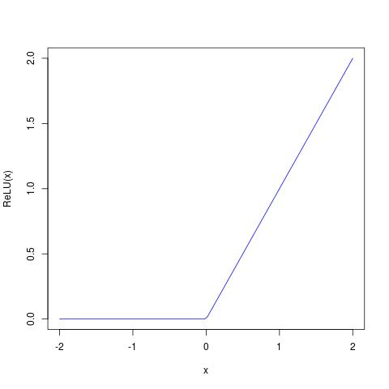
21 - More complex Sigmoid function (using piecewise linear approximation)
However, encoding more complex activation functions can be reduced via piecewise linear approximation with the same boolean arithmetic. Increasing the precision of approximation will make satisfiability slower, but the encoding will be more true with the original network.
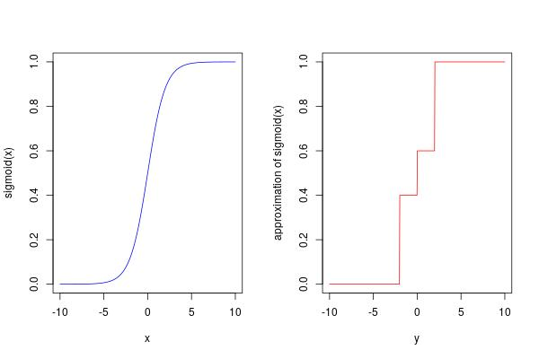
function sigmoid(x)
If(x < 0,
If(x < -2, 0.0, 0.4),
If(x > 2, 1.0, 0.6))
end
22 - Putting together a simple layer
function dense(x, W, b)
out = fill!(Array(undef, size(W,1), size(x,2)), 0)
for i = 1:size(out,1), j = 1:size(W,2)
out[i] += W[i,j] * x[j]
end
out = out .+ b
return out
end
function relu(x)
If(x > 0, x, 0)
end
y = relu(dense(x, W, b))
We can now compose these functions together in order to produce the result of a single layer of the neural network.
23 - Building an entire model with NeuralVerifier
encoding(x) = begin
y = dense(x,
neural_network[1].W,
neural_network[1].b) |> relu;
y = dense(y,
neural_network[2].W,
neural_network[2].b) |> relu;
y = dense(y,
neural_network[3].W,
neural_network[3].b) |> softmax;
end
In NeuralVerifier, this is all done for you. All you need to do is create a function that takes some input \(x\), and apply the dense and non-linearity functions mimicing the architectural design of your original network.
You can see we have passed the pretrained or prelearned weights and biases for each layer of the network.
24 - Setting up search for adversarial examples
\[ \min_{\epsilon} (\mathcal{F}(x) \neq \mathcal{F}(x + \epsilon)), \ \epsilon \leq r \]
for (idx, (x_i, r_i)) in enumerate(zip(x, r))
m = Optimize() # create an optimisation procedure (model)
add!(m, (eps > 0) ∧ (eps <= r_i)) # bound condition on epsilon
y = encoding(x_i) # get initial condition of y in our encoding
add!(m, y != f(xi)) # add the adversarial example condition
minimize!(m, eps) # find the smallest eps
check(m) # check for satisfiability
m.is_sat == "sat" && @info "#$(idx): Adversarial found!"
end
To finalise we must add some conditions to specify we wish to search for adversarial examples. In this case we setup an Optimisation model in Z3, we add the bounds condition on epsilon being above 0, and less than or equal to r. We get the initial y given our encoding function that we made earlier. Finally we add our adversarial condition that the application of our classifier should not be equal to y.
We wish to finish epsilon here to find the closest possible adversarial example to our original input.
Finally, we begin the search by using check, and print out if we have found an adversarial example.
25 - In NeuralVerifier
r = epsilon_expand(x_train', y_train;
ϵ = 1e-7, # the initial step size
ε = 1.0, # RBF width parameter
func = inverse_multiquadric, # RBF function to use
decay = exponential_decay) # Decay function based on density
stable_area, adv_examples = stable_region(Optimize, f, x_train', r;
timeout = 100,
build_fn = encoding)
In NeuralVerifier, we have abstracted all these details away and use higher order functions. We have a function called epsilonexpand which takes some density metric and computes our upper-bounds for each data point in the data.
Then we use the stable region function, passing in our model, our data, and our computed upper-bounds. The return of this function are the adversarial examples that are found, and stable area. The stable area is a distance metric of how close to the original inputs the model is robust against adversarial attacks. This kind of metric might be useful for checking against specifications of using Neural Networks in safety-critical systems.
26 - Adversarial Examples Found!
Running on MNIST dataset.
[ Info: #1: Adversarial found! [ Info: #3: Adversarial found! [ Info: #4: Adversarial found! [ Info: #5: Adversarial found! [ Info: #7: Adversarial found! ...
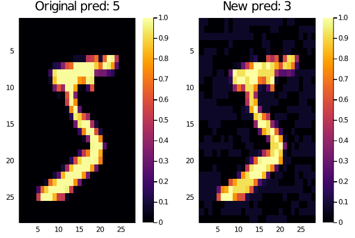
When we apply these functions to the MNIST dataset: a dataset of images of numbers, where each image is classified by the number present in the image. You can see when we run the stablearea function it finds adversarial examples, and we can see just one of these examples where a number 5 is recognised as a 3 by the Neural Network when pixel modifications are applied.
27 - Main contributions
- Using knowledge gleamed from the data manifold to generate individual \(r\) value for each data point.
- Open-source platform for verification of Neural Network properties using SMT solvers
To summarise this talk, I have presented two main contributions: the first, more novel from a research perspective is the computation of upper-bounds for searching for adversarial examples. This is not only useful for our NeuralVerifier framework, but it also enables the use of existing adversarial generation techniques for non-image data.
28 - A thank you to my supervisors
- Monika Seisenberger (Swansea University)
- Jane Williams (Swansea University)
- Adeline Paiement (Université de Toulon)
Before I end my talk, its worth noting that this work is helped by supervisors and funded by Swansea University.
29 - Contributions welcome!
You can find these slides on my personal website below. Additionally follow the github link for more documentation and usage on NeuralVerifier.jl
The slides of this talk are available on my personal website linked here. And you can also find the link to the NeuralVerifier platform where you can learn about, use, and contribute to the development of the platform.
That's it for me, thank you for your time today.